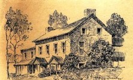

by
Stefan Bielinski
The Albany Staats family is descended from
surgeon Abraham Staats who emigrated to New
Netherland in 1642. By that time, he had married Tryntie
Wessels.  At least four of their seven children flourished and established the Staats family in the city of Albany and in greater Albany County. Other New Netherland era Staats families became prominent in New York and in New Jersey.
At least four of their seven children flourished and established the Staats family in the city of Albany and in greater Albany County. Other New Netherland era Staats families became prominent in New York and in New Jersey.
By 1679, three Staats households existed within the Albany stockade. In 1697, Albany had two Staats-named households including that of surgeon Jacob Staats and newlywed Abraham - as well as the landmark State Street home of Elsie Staats Wendell Schuyler.
By 1756, the family had spread across the upriver region and only the home of cooper Isaac Staats was left in the colonial city. In 1790, however, six Staats households were counted on the first Federal Census. Most prominent among them was the landmark complex anchored by the old Schuyler house which included the homes of businessmen brothers William and Henry Staats!
In 1800, three Staats-named households including the Pearl Street home and store of Barent G. Staats were counted on the city census.
As late as 1815, seven Staats-named addresses were listed in the city directory.
The Staats farm called Hooghbergh on Staats Island just north of Castleton dates from the seventeenth century and was the eighteenth century seat of brothers Gerrit and Jochem Staats. Jochem raised a large family there and was an affable host as noted by a number of Hudson River travellers. His same-named and younger contemporary, Jochim Staats, was an Albany-based merchant. A surprising number of early Albany residents spent at least a part of their lives on Staats Island.
The Dutchess County hamlet of Staatsburg also recalls the family today. notes Online and illustrated family essay. The New York State Library holds considerable manuscript material on the family - numbering some 1,100 items. A different Abraham Staats appears to have established his family on Long Island and in New Jersey at the same time.
Follow this link to more information on the family on this website!

 Sources: Our expositions on the Albany Staats family are based primarily on research in community-based resources. Chief among the printed resources on the family is Josephine Staats Ellsworth, The Staats Family: A History of the Dutch Settlements in New York and Delaware, 1642-1992 (Wilmington, DE, 1992), which appears to comprehend earlier works. Also notable is Harold Staats, Genealogy of the Staats Family printed by the family in 1921. The latest "anecdotal" word, Three Centuries on the Hudson River, by William Staats focuses on the family seat known as Hooghbergh. The Wikipedia entry entitled "Joachim Staats House and Gerrit Staats Ruin" has proven to be the most consistently available statement on the property.
Sources: Our expositions on the Albany Staats family are based primarily on research in community-based resources. Chief among the printed resources on the family is Josephine Staats Ellsworth, The Staats Family: A History of the Dutch Settlements in New York and Delaware, 1642-1992 (Wilmington, DE, 1992), which appears to comprehend earlier works. Also notable is Harold Staats, Genealogy of the Staats Family printed by the family in 1921. The latest "anecdotal" word, Three Centuries on the Hudson River, by William Staats focuses on the family seat known as Hooghbergh. The Wikipedia entry entitled "Joachim Staats House and Gerrit Staats Ruin" has proven to be the most consistently available statement on the property.
first posted: 1/25/03; last updated 5/22/17